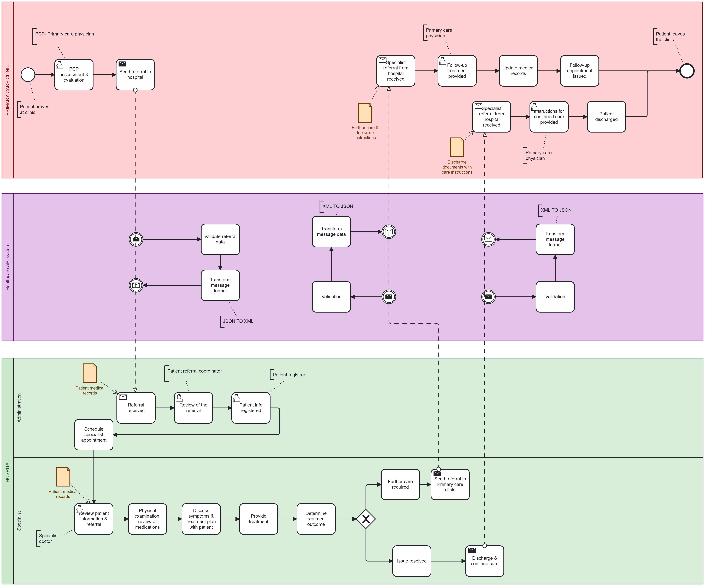

Abhinanditha Thamada
Health Informatics graduate student with a dentistry background, skilled in data analytics, EHR usability, and clinical decision support.
About Me
I am passionate about healthcare workflows, interoperability, and applying evidence-based decision-making. I bring a unique blend of clinical and informatics skills through my experience in dentistry, data analysis, research, and teaching.
Education
-
Indiana University, IN (Aug 2023 – May 2025)
Master of Science in Health Informatics – GPA: 3.85/4.0
-
Dr. KNR University of Health Sciences, India (Sep 2017 – May 2023)
Bachelor of Dental Surgery – GPA: 3.2/4.0
Work Experience
-
Data Analysis Intern – IU School of Human and Health Sciences
Jan 2025 – Present
Analyzed data from 1800+ COVID-19 monoclonal antibody patients using R and Excel. Created dashboards in Tableau to highlight adherence trends by race, gender, and location.
-
Palliative Care Research Intern – IU School of Human and Health Sciences
Jan 2025 – Present
Built cohort-specific REDCap forms and conducted statistical analysis of Parkinson’s patient data to identify trends in advanced care planning.
-
Graduate Teaching Assistant – Luddy School of Informatics, IU
Jan 2024 – May 2024
Facilitated collaboration and addressed student queries in Health Information Exchange courses focused on healthcare data systems.
-
Co-instructor for Human Physiology – Dept. of Biology, IU
Jan 2024 – Present
Led lab sessions and workshops using iWorx LabScribe for 25+ undergraduates focused on respiratory, cardiovascular, and nervous system experiments.
-
Dental Intern – Dr. KNR University of Health Sciences
May 2022 – May 2023
Delivered patient care and participated in rural dental camps, managing cases across general dentistry disciplines.
Projects
-
ETL Pipeline using FHIR APIs (Aug 2024 – Dec 2024)
Built an ETL pipeline connecting Primary Care EHR and OpenEMR using Python and FHIR APIs. Integrated SNOMED CT codes and used BPMN workflows in Camunda.

Clinical Decision Support for CKD and Psoriasis (Aug 2024 – Dec 2024)
Created Clinical Decision Rules using SNOMED CT and ATLAS tool, developed decision trees, and aligned them with literature-based evidence.
-
Impact of Climate Change on Global Food Security Index (Jan 2024 – May 2024)
Cleaned and analyzed data in R, applied ANOVA and visualizations (box plots, maps) to study the effects of climate on food security.
-
EHR Usability Analysis (Jan 2024 – May 2024)
Reviewed OpenEMR workflows, identifying alert fatigue and interface issues. Recommended usability improvements via rubric assessment.
-
Prediction of Student Dropout Rates (Aug 2023 – Dec 2023)
Used logistic regression and decision trees to predict dropout risk. Performed statistical tests (Shapiro-Wilk, Chi-square) and visualized results using ROC curves.
Publications
Co-author (Dec 2024)
"Students Consider the Impact of Democratic and Republican Healthcare Policies on Health Informatics and Health Information Technology"
Published on ResearchGate – Explored how political policy affects investment and budgeting in HI/HIT.
Skills
- Programming: Python, R, SQL
- Tools & Platforms: PyCharm, GitHub, Camunda, Postman Web, Athena
- Visualization: Tableau, Power BI
- Healthcare Databases: REDCap, OpenEMR, PrimaryCare EHR
- Health Standards: ICD-10, SNOMED CT, LOINC, RxNorm, HL7, HIPAA
- Desktop Tools: Microsoft Excel, Word, PowerPoint, Outlook
- Certifications: CITI – Biomedical & Social/Behavioral Researcher